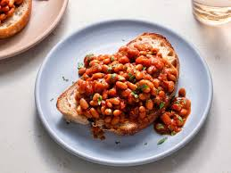

Beans on toast

Description
Beans on toast are my absolute favourite. They may seem simple at first glance, but it takes real skill to craft a true classic.
Ingredients
- 1 Can of beans
- 2 Slices of bread
- Butter
Steps
- Heat up the can of beans.
- Toast the bread.
- Butter the bread and pour on the beans.